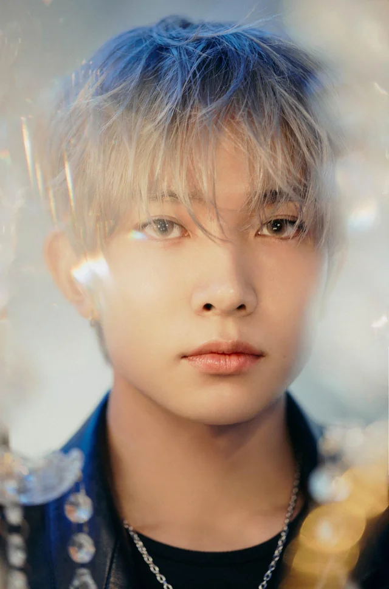
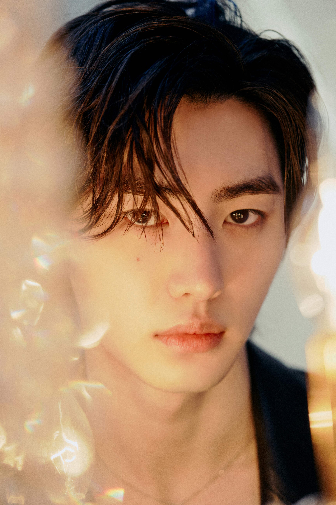
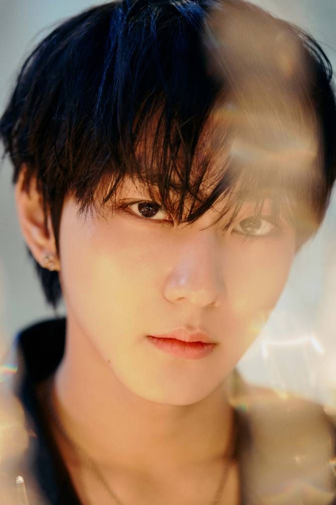
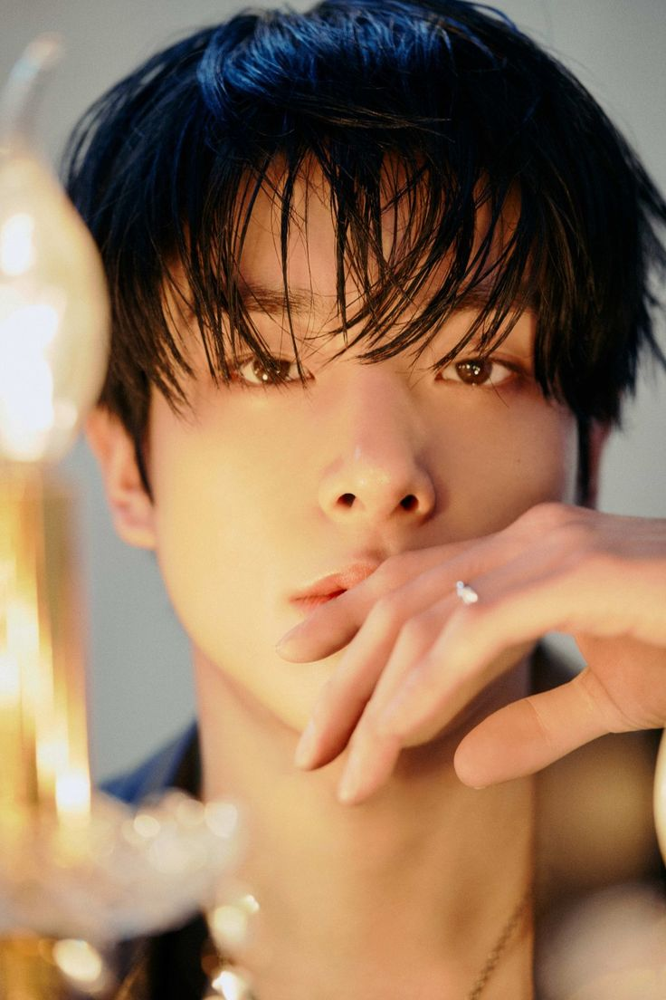
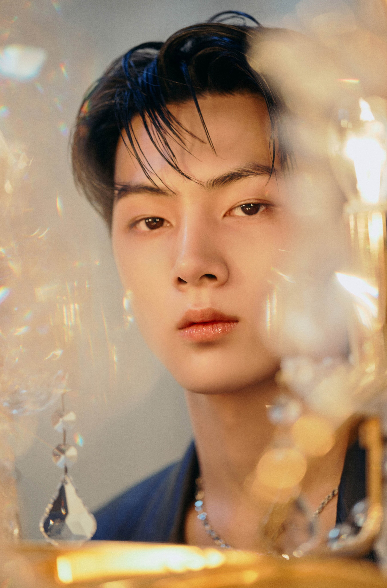

Lee Hee-seung (이희승)
(Main Vocalist, Center)

Park Sung-hoon (박성훈)
(Lead Dancer, Visual)

Kim Seon-woo (김선우)
(Lead Vocalist)

Yang Jung-won (양정원)
(Leader)

Nishimura Riki (西村 力)
(Main Dancer, Maknae)

Sim Jae-yun (심재윤)
(Main Vocalist,Visual)

Park Jong-seong (박종성)
(Lead Dancer)